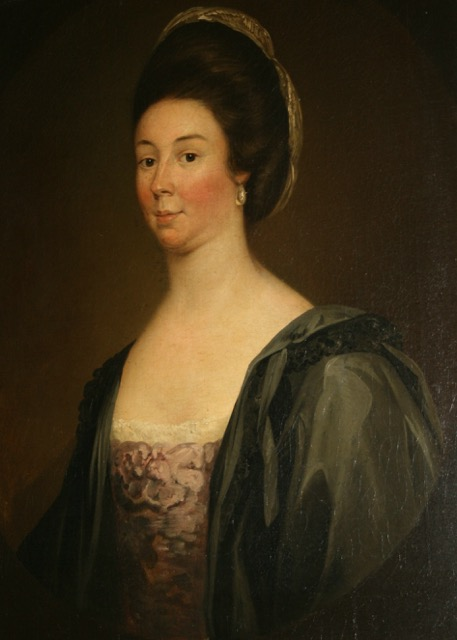

I am in the process of completing this research project and will update the page with all
of the information I have collected.
Until then, please enjoy any of the other research projects I have posted.
Thank you!
Research in Education
Race in Education
1776-1971
Historical Perspectives Project
The goal of this assignment was to explore and analyze the historical and political influences on schooling in the United States.
I chose this timeline to exhibit the reason for the racial disparities we have in education today. It gives a timeline of what education has been like for African American students throughout history and widens the lens on the achievement gap in relation to the income gap.
1635 | The First Public School
Boston Massachusetts: Boston Latin School
- The first public school was founded on April 23rd, 1635 and was only open to white male students for college preparation.
- Curriculum: Basic Math/reading skills, Greek & Latin
1776 | US Independence
In the southern states, slavery highly impacted their success; Slavery was considered necessary for the southern states where agriculture was a prominent source of income for most of the population.
Laws were enforced to stop black people from learning to read or write, it was rare for slaves to know basic literacy skills.
Slave education: Margaret Douglas
She was caught teaching free blacks how to read in a church and put on trial.
Cotton Gin: Eli Whitney
This invention greatly reduced the need for slaves in the south.